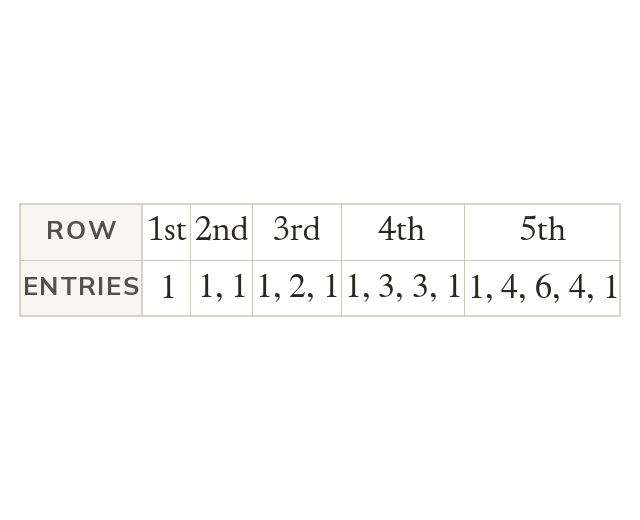
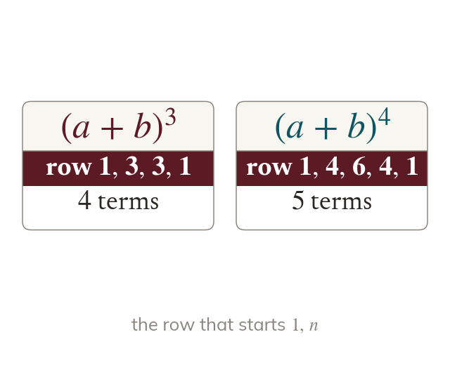
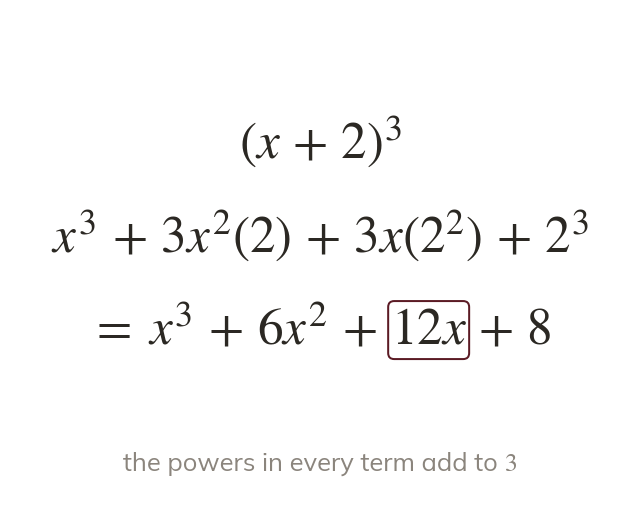
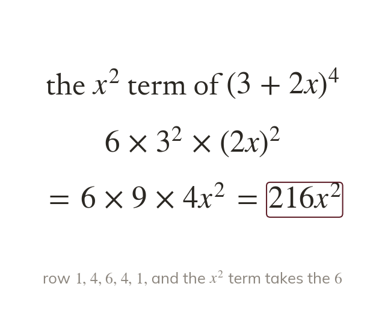
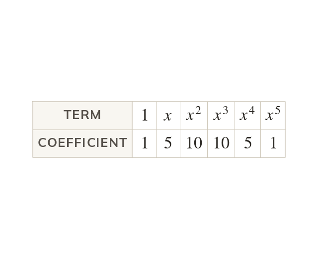
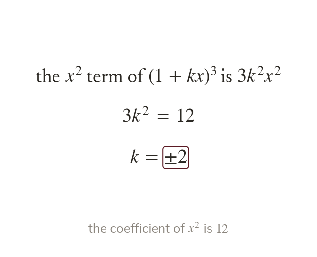

Building the triangle
Each row starts and ends with
Every other entry is the sum of the two entries above it.
Multiplying out bracket by bracket is slow, but the coefficients follow a pattern that Pascal's triangle writes down. The next lesson finds any entry of the triangle with nCr, so larger powers can be expanded without the triangle.
Work down the page at your own pace. Write every answer in your book first, then click to check it.
Read each card, then follow the worked examples one step at a time.

Each row starts and ends with
Every other entry is the sum of the two entries above it.

The row that starts gives the coefficients of An expansion of has terms.

In each term the powers of the two parts add to n. The power of the first falls as the power of the second rises.
Pick an answer. If it's wrong, the feedback tells you which mistake it was.
Write the blanks in your book first, then tap each one to check.
Read each card, then follow the worked examples one step at a time.

A term such as is raised to a power as a whole, so
The coefficient then collects the entry and both powers.

A single coefficient needs only its own entry and powers. The rest of the expansion can be left out.

If a coefficient is given, write it in terms of the constant and solve. A square gives a positive and a negative value.
Pick an answer. If it's wrong, the feedback tells you which mistake it was.
Write the blanks in your book first, then tap each one to check.
Finished? Next lesson: 8.2 Factorial Notation.
For each skill, tap the one that is true for you today. Your Revise pages start with anything you mark Not yet.
Your ratings are saved on this device only.
Log in, then search for a code to practise that skill.